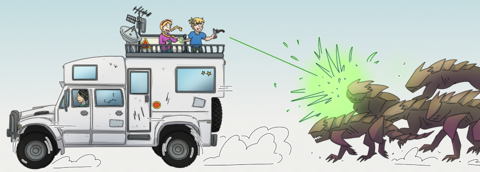
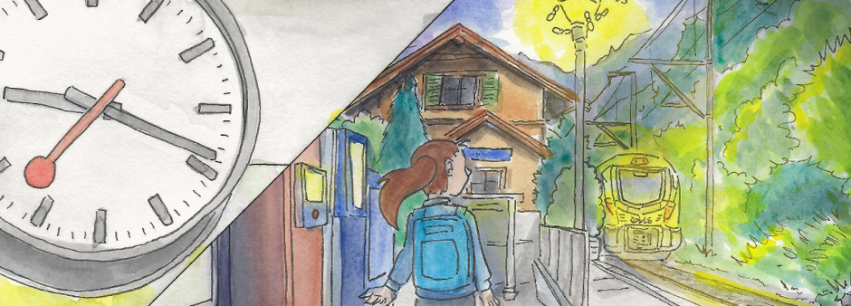
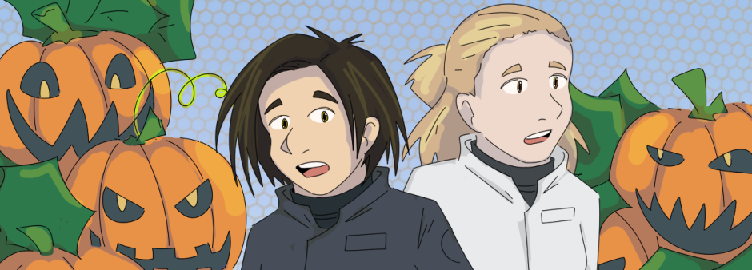
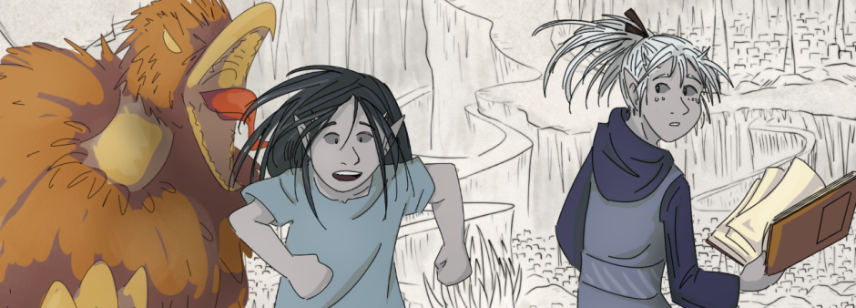
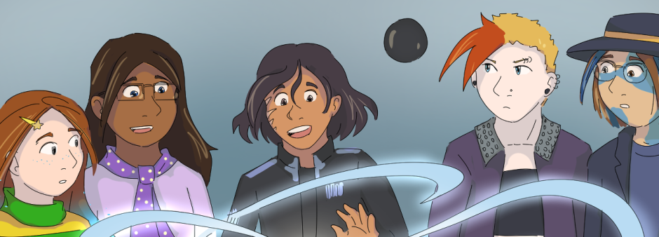

An optimistic post apocalyptic and fantasy novel. It follows the story of a crystal hunter and her two young apprentices as they try to find their place in a world where losing hope can be as dangerous as the monsters and the poison threatening to drive humanity to extinction.
Year created: 2024 (chapter 1)
A silly short comic about a hiker. Drawn on paper, using ink pens, watercolors and gouache.
Year created: 2024
A Halloween-themed biology sci-fi adventure, drawn for the 2021 24-Hour Comic Day.
It's set in the same universe as Terra Prima, although not related to the story and it would have happened decades before the current story time.
Year created: 2021
A silent short comic about the mischieves of two characters who appear in another story I wrote (not yet shared since my friend and I are still working on it). You can read it without knowing the novel they're from.
Year created: 2021
A short story that's an adaptation of a scene that happens much later on Terra Prima, but I doubt it will be much of a spoiler because by the time we reach that part my art and storytelling will have likely changed a lot. This story was drawn for the 2020 24-Hour Comic Day.
Year created: 2020
I got a Terra Prima minicomic accepted and published in an anthology released in the Netherlands. That was cool! The anthology is called "Over A Coffee: An Anthology" and my story is "Nanoparticles in my coffee".
UPDATE: in 2025 there are no physical copies available but the PDF can be purchased on Amazon.
Year created: 2019
A page of an early version of Terra Prima, drawn on paper using in pens, was accepted into Silhouette: Literary and Art Magazine, the art magazine at Virginia Tech.
Year created: 201...